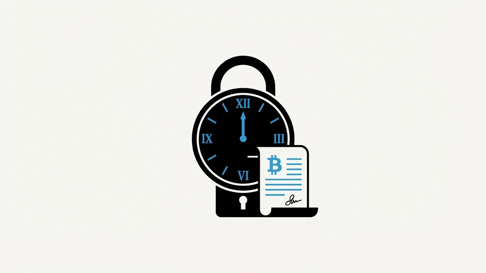

When people first hear about Bitcoin After Life, two questions arrive almost immediately. The first: "Why a plugin for Electrum instead of your own wallet?" The second: "And why should I trust these Will-Executor servers with my inheritance?"
Both questions have the same answer, and it is the design philosophy at the core of the whole protocol: don't ask people to trust you — build a system where trust is not required.
Why Electrum: signing is sacred
The single most security-critical operation in Bitcoin is signing a transaction. Everything else — addresses, balances, broadcasting — is public and verifiable. Signing is where your private keys touch the world, and it is where wallets live or die.
Electrum has been signing Bitcoin transactions since 2011. It is one of the oldest, most audited, most battle-tested pieces of software in the entire ecosystem. It supports hardware wallets, it works offline for air-gapped signing, and millions of users have stress-tested it against every edge case imaginable for over a decade.
Building a new wallet from scratch would have meant asking users to trust our signing code with their life savings. We refused. The BAL plugin never signs anything. It builds the transaction, shows it to you, and then asks Electrum — your Electrum, with your keys, your password, your hardware wallet — to sign it. The plugin asks; you decide. Your keys never leave your device, and the signing process is entirely independent of BAL.
This choice also shrinks the attack surface dramatically: BAL's code handles no secrets, so there is nothing in it worth stealing.
Why timelocks: consensus, not promises
The second pillar is nLocktime, a feature built into the Bitcoin protocol itself since the very beginning.
A time-locked transaction is a normal, fully signed Bitcoin transaction with one special property: it carries a timestamp, and Bitcoin nodes will reject it until that moment arrives. Not "should reject" — will reject. It is not a policy of any company or server. It is a consensus rule, enforced by the same mathematics that prevents double-spending.
This changes the entire trust equation of inheritance:
- No one can execute your will early. Not an impatient heir, not a compromised server, not a bug. Before the delivery date, the transaction simply does not exist as far as the network is concerned.
- No one can alter it. The transaction is already fully signed by your key. Changing a single satoshi would invalidate the signature.
- No one can steal with it. The outputs are fixed at signing time: your heirs' addresses and the executor's fee. A Will-Executor holding the transaction holds something that can only ever pay your chosen destinations.
What Will-Executors actually are (and are not)
With timelocks in place, the role of the Will-Executor becomes almost boring — and that is precisely the point. A Will-Executor server does exactly two things:
- Store your signed, time-locked transaction.
- Broadcast it to the Bitcoin network when the delivery date arrives.
It cannot peek at the future, cannot modify the transaction, cannot redirect the funds. It is closer to an automated mailbox than to a bank. And its incentive to behave is not reputational or legal — it is on-chain: each inheritance transaction includes a fee for the executor, which is only paid when the transaction confirms. The server earns nothing unless the inheritance executes exactly as you designed it.
Redundancy completes the picture. The plugin creates one transaction per selected Will-Executor, drawn from the public WeList directory. Only one of them needs to still be operating on the delivery date for your will to execute. The first to broadcast wins the fee — a built-in race that keeps every executor honest and punctual.
Trust, deleted
The history of crypto is littered with "trust us" — trusted exchanges, trusted custodians, trusted recovery services — and with the wreckage left when that trust broke. BAL's architecture is an attempt to delete the word entirely:
| Concern | Traditional answer | BAL's answer |
|---|---|---|
| Who holds my keys? | A custodian | Only you, in Electrum |
| Who controls the timing? | A court | Bitcoin consensus (nLocktime) |
| Who executes the will? | A lawyer | A redundant network of incentivized servers |
| What stops abuse? | Legal liability | Mathematics and game theory |
If you are the kind of person who verifies instead of trusting — and if you hold your own keys, you probably are — both the plugin and the server are open source, MIT-licensed, and waiting for your review on our Gitea. The full protocol walkthrough is in the manual, and we recommend everyone starts on testnet.
Don't trust. Verify. Then, and only then, plan.